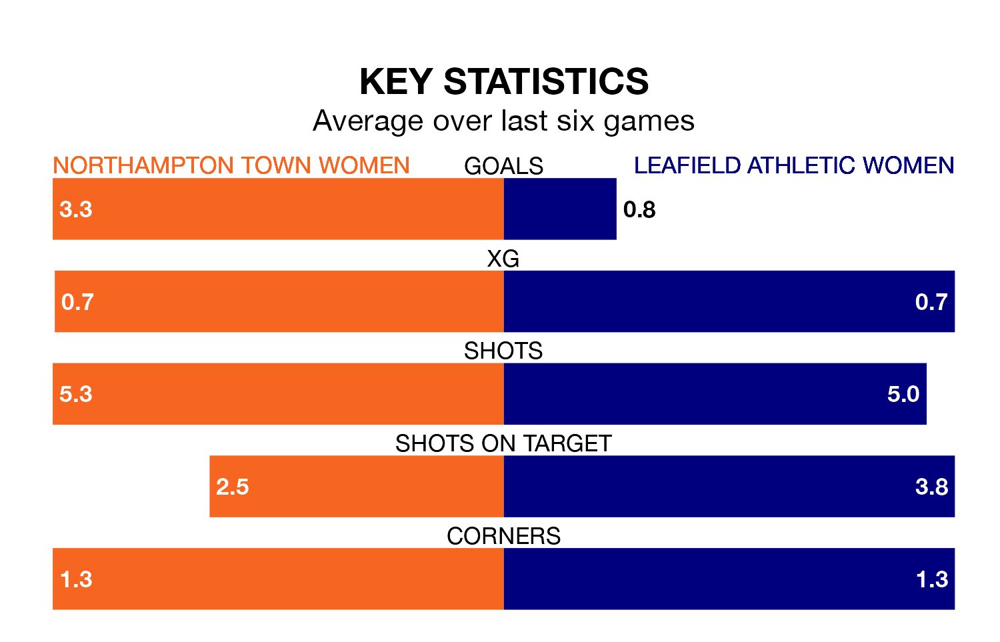

Leafield Athletic Women travel looking to secure a first win in 17 Women's National League Division One – Midlands games against Northampton Town Women on Sunday.
Leafield Athletic have lost 11 and drawn five matches since they last earned three points – against Boldmere St. Michaels Women on September 3.
They face a Northampton Town side who have won nine and drawn two over that time.
Leafield Athletic are bottom of the table after 18 games, of which they have won one and drawn five, earning eight points.
Northampton Town are seven places ahead of the visitors in fifth, with 10 wins and two draws putting them on 32 points.
With 15 goals in 18 games so far this season, Leafield Athletic are the league's second-lowest scorers with 0.8 goals per game. And they are conceding more than average, letting in 43 goals at a rate of 2.4 per game.
The home side, meanwhile, are above average scorers, with 2.5 goals per game, compared to a league average of 1.8. They have conceded 1.7 goals per game.
In the last three years, Northampton Town and Leafield Athletic have played each other on three occasions. Northampton Town won two of them and they drew once.
Their last meeting was on December 17, when Northampton Town won 4-0 away.
Northampton Town's last match was on March 24, a 2-1 win against Sutton Coldfield Town Women.
Leafield Athletic lost 1-0 against Solihull Moors Women last time out, on Tuesday.
Updated: 16:41 (UTC), 04/04/24